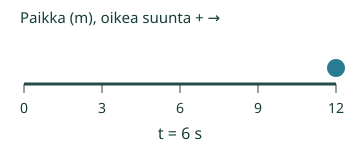
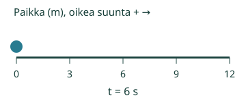

Loikka selvittää, miten tauko vaikuttaa keskinopeuteen.
Lasken koko matkan ja koko ajan avulla.
Mistä tämä nähdään?
Yhtä paljon jokaisessa sekunnissa
Anna leluvaunun kulkea12 m neljässä sekunnissa. Yksi tasainen vertailuvauhti jakaisi matkan neljään3 m osaan: 12 m /4 s =3 m/s. Tämä on keskinopeus, vaikka todellinen vaunu kulkisi välillä eri vauhtia.
Kello käy tauollakin
Loikka kulkee12 m kolmessa sekunnissa ja lepää sitten3 s. Kokonaismatka on12 m, kokonaisaika3 s+3 s=6 s. Keskinopeus =12 m/6 s=2 m/s. Liikkumisvaiheen4 m/s ei ole koko matkan keskinopeus.

Kahta nopeutta ei aina vain keskiarvoisteta
2 m/s ajan2 s antaa4 m. 6 m/s ajan6 s antaa36 m. Koko matka40 m ja aika8 s: keskinopeus5 m/s. (2+6)/2=4 ei tässä kelpaa, koska eri vauhdeilla kuljettiin eri pituiset ajat.
Ennakoi: palaatko lähtöpaikalle kulkematta matkaa? Tutki Edestakainen matka.
Kokeile itse
Loikka kulkee 12 m ajassa 3 s ja lepää 3 s. Laske keskinopeus koko 6 sekunnin ajalta, m/s.
Ajattelun tueksi
Kokoa ensin kaikki matkat ja kaikki ajat. Laske tauko aikaan. Käytä v=s/t. Paluumatkalla lisää myös takaisin kuljettu matka. Yksikkö on annetun matkan yksikkö/annetun ajan yksikkö. Malli on vapaaehtoinen erillinen esimerkki.
Tehtävän tiedot riittävät vastaamiseen. Malli on erillinen vapaaehtoinen tutkimus, eikä toistoa tarvitse katsoa loppuun.
Lisää tutkittavaa
12 m oikealle ja12 m takaisin on24 m kuljettua matkaa. Kuudessa sekunnissa keskinopeus on24/6=4 m/s, vaikka paikka palaa nollaan. Siirtymään perustuva suunnattu keskinopeus olisi0/6=0 m/s. Tällä sivulla keskinopeus tarkoittaa kuljettu matka /koko aika.

Pyöräilijä ajaa6 km ajassa0,5 h ja lepää0,5 h. Puoli tuntia ja puoli tuntia on yhteensä1 h, joten keskinopeus6 km/h. Ajon aikainen12 km/h ei huomioi taukoa.
Opettajalle ja ilman ruutua
Luokat7–9. Kanoninen rooli atomic. Tavoite: Laskee keskinopeuden kokonaismatka/kokonaisaika, tauot ja edestakaisen liikkeen kuljettu matka huomioiden; erottaa sen hetkellisestä vauhdista ja siirtymästä. Required-esitietoryhmät säilyvät: PHY79-SPEED-CONCEPT. Vahvat tuet eivät muutu lisäporteiksi.
Mittaa paperireitillä vaunun kulkema matka ja koko aika. Pidä tauko ennen kellon pysäytystä. Kuljettu matka ei vähene palatessa. Palojen rajalla nopeus vaihtuu mallissa välittömästi; se on laskuesimerkin idealisointi, ei realistinen jarrutusmalli.
Tämä sivu toteuttaa kuusi nimettyä yksiulotteista vakionopeusjaksoista koottua mallia. Käytetyt yksikköparit ovat m/s ja km/h; tauko on oma nollanopeusjaksonsa. Koko aika on mallista riippuen1 h tai4–8 s. Ei kitkaa,2D-kaarteita, mielivaltaista reittiä tai käyttäjän tuomaa mallikuvausta. Puuttuva tai tukematon valinta ei korvaudu oletuksella. Fyysinen pysähdys on mallin nollanopeusjakso; Toiston Tauko on vain katselun ohjaus. Mallin aika ja ruutuaika ovat erilliset. Kuljettu matka on aina ei-negatiivinen, suunnattu paikka/nopeus voi olla negatiivinen. Tämä esittää matemaattisen idealisoinnin, ei toteutettua koetta.
Vastaus on paikallinen matalan panoksen harjoitus. Avun käyttö tai mallin katselu ei osoita itsenäistä, viivästettyä tai formaalia hallintaa. Ei oppijahistoriaa, verkkotallennusta, aikarajaa, pakollista puhetta, nimeämistä tai kuuntelua. Ihmis-/oppilas-/oppimisteho-/manuaalinen saavutettavuus- tai julkaisuhyväksyntä ei synny tästä tarkistuksesta.
Lopuksi: Kuljet10 m ajassa2 s ja odotat3 s. Mikä on keskinopeus koko ajalta? Miksi pelkän liikkumisajan käyttäminen antaisi eri vastauksen?